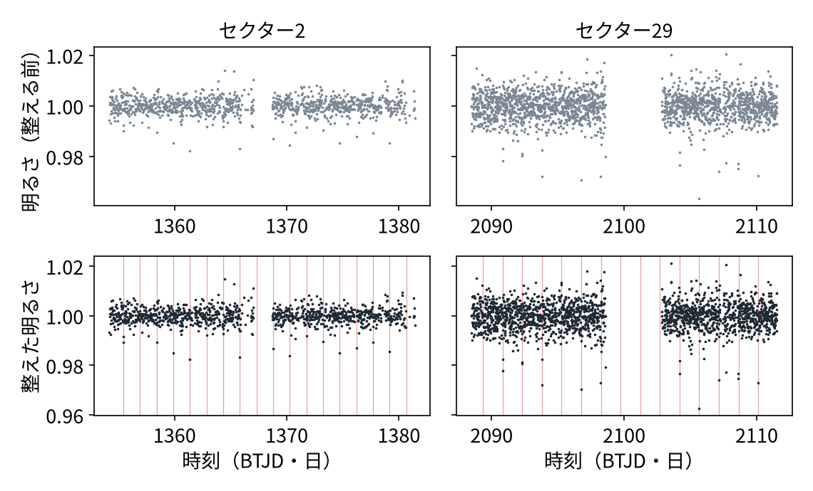
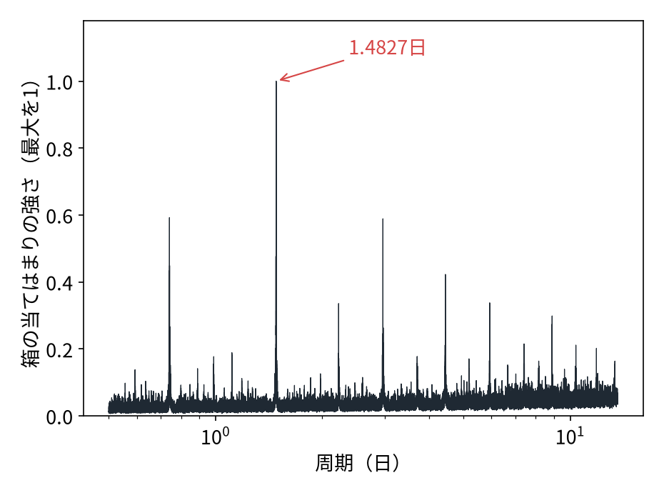
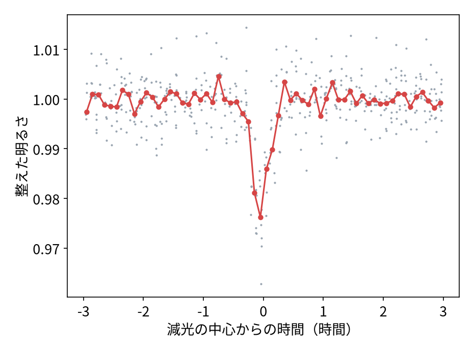

やったこと
論文の表にある新候補9個が回る星9個の記録で周期を探し、論文の周期と比べた（差1%以内なら見つけ直したと数える）
結果：見つけ直した論文の新候補
自動判定を通ったのは7個中6個（落ちた1個は論文の本文に無い試験で落ちた・10枚目）。残る2個は減光が2回しか見つからず、検出条件（3回以上）に届かなかった。結果は11〜13枚目
やったこと
NASA の TOI 一覧で惑星と確かめられた152個が回る星128個の記録で、①と同じ手順で周期を探し、TOI 一覧の周期と比べた（差1%以内なら見つけ直したと数える）。選び方は8枚目
結果：見つけ直した既知の惑星
自動判定を通ったのは94個中88個。結果は14・15枚目
①②とも、使った記録（QLP セクター1〜63）と検出条件（減光3回以上・SNR 9超）は論文と同じ。周期を探す計算（BLS・19枚目）の作り方と、自動判定の基準は論文と一部違う（9・10枚目）。手順の全体は8枚目、言えること・言えないことは16枚目
M型矮星（太陽より小さく赤い星）を回る巨大ガス惑星は珍しく、でき方を今の理論で説明しにくい
M型矮星を回る巨大ガス惑星の見つかった数を増やしたい
M型矮星の明るさの記録
星がくり返し暗くなる跡（信号）を星ごとに探す
惑星候補（まだ惑星と確定していないもの）
Eschen と Kunimoto（米国マサチューセッツ工科大学）が2024年6月に MNRAS（英国の天文学の論文誌）に出した。
TESS・対象の選び方・候補と確定の違いの詳細は21枚目
TESS チームの公表済みの一覧（TOI）に無い惑星候補（絞り方は7枚目）。いちばん小さいものは半径が地球の1.4倍
半径が地球の6倍より大きく、巨大ガス惑星の候補
「半径が地球の8倍超・周期10日未満」の型。M型矮星では論文の時点で11個しか確定していない
周期0.68日の候補・細長い軌道の候補・論文が言っていることは22枚目
深さ＝（惑星の半径÷星の半径）の2乗。地球と同じ大きさの惑星なら、
| 星 | 星の半径 | 深さ（ppm＝100万分の1） |
|---|---|---|
| 太陽 | 1.00 太陽半径 | 84 ppm |
| M型矮星（論文の新候補の星 TIC 12999193。TIC は18枚目） | 0.251 太陽半径 | 1,331 ppm |
同じ惑星でも、この星では深さが太陽の 16倍になる。論文が調べる星の半径の上限（0.6太陽半径）に近い星でも太陽の約2.8倍で、小さい惑星も見つけやすい。M型矮星は天の川銀河の星の約7割を占める。
私たちとの違い：やり方は同じ一部違う（9・10枚目）していない
① 論文の新候補（9個）
結果は11〜13枚目
② 既知の惑星（152個）
結果は14・15枚目
②の選び方：表面温度2,400〜3,900K・半径が太陽の0.6倍未満・13.5等より明るい星（論文の対象の条件から、質量0.6太陽質量未満の条件だけを除いたもの）を回り、周期が0.5〜25日で、セクター63までに観測されたもの（周期の範囲は私たちが決めた。セクター63までは論文の記録の範囲と同じ）
| 論文 | 私たち | |
|---|---|---|
| 星 | M型矮星 107,303個 | 新候補9個＋既知の惑星152個が回る星137個（複数の惑星が回る星がある） |
| BLS | cuvarbase（GPU で回す公開ソフト） | 導入できず、同じ考え方で自分で書いた |
| 試す減光の長さ | 見込む長さの付近（範囲は本文に無い） | 円軌道で見込む長さ（20枚目）の0.5〜2倍を7通り |
| 周期の上限（途切れない一番長い期間の半分。100日まで） | 約27日の空白を切れ目とする。星ごとの上限の中央値25日 | 10日超の空白を切れ目とする。中央値25.5日（137個の星。星が違うので比べられない） |
| 1つの星から拾う信号 | 本文に無い | 当てはまりが一番強い周期（12枚目の図2）が条件を満たせば1本。減光を隠して探し直す。最大3本 |
データ（QLP セクター1〜63。137個の星で延べ941セクター分）・整える（biweight・窓0.75日）・検出条件（減光3回以上・SNR 9超）は論文と同じ
各行の詳しい説明は24枚目
| 論文 | 私たち | |
|---|---|---|
| 自動判定の道具 | 前の探索（Faint Star Search・19枚目）の試験＋新しい試験（23枚目） | 著者の公開版 LEO-vetter 1.2.0。基準値は既定のまま |
| 左右の非対称（σ は19枚目） | 5σ超で落とす | 8σ超で落とす |
| 見込む減光の長さ÷当てはめた長さ | 0.5未満で落とす | 0.6未満で落とす |
| 軌道の半径÷星の半径 | 当てはめた値が1.5未満で落とす | 加えて、周期と星の質量から求めた値が2未満でも落とす |
| 二次食（19枚目）を測る所にデータが無い | 本文に無い | 落とす |
| 質の悪い減光を除いて SNR を計り直す | 本文に無い | 残った減光が3回未満か、計り直した SNR が6.2未満なら落とす |
| 画像の試験 | している | していない |
| 人の目 | TOI でない28本を見た | していない |
論文より厳しいのは「見込む減光の長さ÷当てはめた長さ」「軌道の半径÷星の半径」、論文の本文に無く私たちだけが落とすのは「二次食を測る所にデータが無い」「SNR を計り直す」、緩いのは「左右の非対称」（詳しくは25枚目）
見つけ直した論文の新候補
自動判定を通った新候補
一致＝周期の差が1%以内。見つけ直した新候補7個の差はどれも0.0019%以下。SNR は19枚目
| 星 | 論文の周期（日） | 私たちの周期（日） | 私たちの SNR | 自動判定 |
|---|---|---|---|---|
| TIC 12999193 | 1.482641 | 1.482650 | 21.3 | 通った |
| TIC 231080232 | 12.554340 | — | — | 見つからなかった |
| TIC 231949697 | 0.907204 | 0.907208 | 11.7 | 通った |
| TIC 251090642 | 20.041690 | — | — | 見つからなかった |
| TIC 262605715 | 1.161258 | 1.161237 | 36.6 | 通った |
| TIC 268727719 | 0.625683 | 0.625686 | 29.7 | 通った |
| TIC 290048573 | 1.483396 | 1.483405 | 14.1 | 通った |
| TIC 303682623 | 0.680613 | 0.680608 | 87.1 | 通った |
| TIC 311276853 | 5.169510 | 5.169606 | 9.9 | 落ちた：質の悪い減光を除くと、残った減光は9回中2回（3回未満）。計り直した SNR が9.9から5.5に下がり、判定の線6.2を下回った |



セクター2・29、2,999点。データのある所に入った減光22回、図3の底で約2.4%暗くなる、SNR 21.3。論文の半径の比0.357（表1）の2乗なら、星全体にかかれば約13%暗くなるはずで、それより浅い。浅く見える理由は論文 第3.1節の説明による：この惑星の b（惑星が星の中心からどれだけ外れて横切るか。星の半径を1とした値）は1.1で星の縁をかすめ、一部しか星にかからないので浅く見える。論文の周期 1.482641日との差 0.0006%
探索の手順は9枚目、星ごとの値と詳しい説明は26枚目
見つけ直した既知の惑星
自動判定を通った既知の惑星
惑星152個は星128個を回る。一致＝周期の差1%以内
止まった理由の内訳は27枚目
自動判定で落ちた既知の惑星
一番多い試験は「惑星が横切るときの減光の形を当てはめても、平らな直線より良くならない」で4個
| 惑星 | TOI 一覧の周期（日） | 落ちた試験 |
|---|---|---|
| TOI 1231.01 | 24.2455 | 1回の減光が信号の強さの大半を占める 奇数番目と偶数番目の減光で深さか時刻が違う |
| TOI 1467.01 | 5.9711 | 惑星が横切るときの減光の形を当てはめても、平らな直線より良くならない |
| TOI 2293.01 | 6.0683 | 惑星が横切るときの減光の形を当てはめても、平らな直線より良くならない |
| TOI 4559.01 | 3.9649 | 惑星が横切るときの減光の形を当てはめても、平らな直線より良くならない 減光ごとの強さがそろっていない |
| TOI 5095.01 | 3.4846 | 周期ごとに時刻を重ねると、減光以外の時点にも同じくらいの減光がある 惑星が横切るときの減光の形を当てはめても、平らな直線より良くならない |
| TOI 7858.01 | 12.7138 | 奇数番目と偶数番目の減光で深さか時刻が違う 主な減光とは別の時点に、もう1つ減光がある |
| 照合する一覧 | 中身 | 載っている星の数（TIC 番号で数えた） |
|---|---|---|
| TOI | TESS チームが惑星らしいと公表した信号 | 7,835個 |
| CTOI | TESS チーム以外が届け出た候補 | 4,936個 |
| ahrazzle の一覧 | 個人が公開している TESS の候補（査読なし） | 2,405個 |
3つのどれにも載っていない星の信号だけを、新しい候補とする（論文の「新しい」は TOI に無い信号＝22枚目。こちらは3つを見て星ごとに外すので、論文より厳しい）。
Eschen と Kunimoto（米国マサチューセッツ工科大学）が、2024年6月に英国王立天文学会の論文誌 MNRAS に出した論文。題は「TESS で見つけた M型矮星の新しい惑星候補9個、うち5個は巨大ガス惑星」。TESS は2018年に打ち上げられた NASA の宇宙望遠鏡で、ほぼ全天の星の明るさを測り続けている。
M型矮星は、太陽より小さく温度の低い赤い星で、天の川銀河の星の約7割を占める。小さいので、前を横切る惑星が見つけやすい（理由は5枚目）。木星のような巨大ガス惑星は、M型矮星の周りでは太陽に似た星より珍しい。惑星のもとになるガスや塵が M型矮星の周りには少なく、今の理論ではどうやってできたか説明しにくい。だから見つかった数を増やすことが、でき方を調べる材料になる。
TESS の観測対象の星の一覧から、13.5等より明るい M型矮星 117,475個を選んだ（等級は数が小さいほど明るい。13.5等は、TESS の画像から星ごとの明るさの記録を作る処理が扱う明るさの下限）。TESS は空を区画に分け、1区画を約27日見ては次の区画へ移る。1区画を見るのを1回と数え、その最初の63回分の観測に記録があった107,303個を調べた。記録が無かった約1万個の理由は論文に書かれていない。
惑星が星の前を横切ると、星が周期的に少し暗くなる（5枚目）。この「くり返し暗くなる跡」を、周期を変えながら当てはめる計算プログラム（BLS。論文は公開ソフト cuvarbase で回した。手順は7枚目）で星ごとに探した。見つかった跡を「信号」と呼ぶ。大半の星からは1本も出ず、1つの星から何本も出ることもある。
「惑星候補」は、まだ惑星と確定していないもの。確定には追加の観測（惑星に引かれて星がわずかに揺れる速さを測り、惑星の重さを出す観測など）が要ると論文も書いている。
信号13,642本から、惑星以外の原因（2つの星が互いに隠し合う連星や、観測装置の乱れなど）で暗くなった偽物を、暗くなり方の形や量の試験で機械的に落とし、113本に絞った。このうち85本は、TESS チームが惑星らしいと公表している一覧（TOI）に既に載っていた信号。残る28本を人の目で見てさらに偽物を外し、TOI に無い惑星候補を9個残した。論文の題の「新しい」は、TOI に無いという意味。
いちばん小さいものは半径が地球の1.4倍。公転周期は、9個のうちいちばん長いもので20日（星を20日で1周する）。5個は半径が地球の6倍より大きく、巨大ガス惑星の候補。
9個のうち3個は、TESS チーム以外の研究者が届け出る別の一覧（CTOI）には既に載っていた。どちらの一覧にも無く、この論文で初めて出たのは6個。
巨大ガス惑星の中でも特に大きく星のすぐ近くを回るもの（半径が地球の8倍超・周期10日未満）は、M型矮星では論文の時点で11個しか確定していない。巨大ガス惑星の候補5個のうち2個がこれに当たり、確定すれば12・13個目になる（どの2個かは論文の本文に書かれていない）。また、巨大ガス惑星の候補の1つ TIC 303682623.01 は周期0.68日で、M型矮星を回る巨大ガス惑星で一番短くなる可能性がある（TIC は TESS が星につけた番号、末尾の .01 はその星の1つ目の候補）。
巨大ガス惑星の候補の1つ TIC 12999193.01 は、軌道が円より細長い可能性がある。外側でできた惑星がほかの天体に引かれて細長い軌道になり、星の近くまで移ってくる、という説があり、その途中の姿かを調べる手がかりになる。
この9個だけで、でき方が分かったわけではない。追加の観測で軌道の形や大気を測ると、星の近くでできたのか、遠くでできて移ってきたのかを見分ける材料になる、と論文は書いている。
| 自動判定の試験（どれも13,642本の信号すべてにかけた。外した数は重なるので、足し引きしても113本にならない） | 数（本＝信号） |
|---|---|
| 前の探索（暗い星の惑星探し。Kunimoto ほか 2022）の試験：減光の形・奇数と偶数の回の差・二次食（主な減光と別の時点に出る2つ目の減光）・画像の位置のずれ など | 2,928本が通った（この行だけ通った数） |
| 新しい試験・ありえない軌道：a/Rs（軌道の半径÷星の半径）<1.5、qcirc/qtran<0.5（q は減光の長さ÷周期。circ は円軌道で見込む値、tran は当てはめた値）、qtran>0.5（減光が周期の半分より長い。qtran>0.5 だけは私たちも同じ線。qcirc/qtran は線が違い、a/Rs は論文の線に LEO-vetter の既定の線を足した＝25枚目） | a/Rs<1.5で2,401本、 qcirc/qtran<0.5で7,760本、 qtran>0.5で141本を外した |
| 新しい試験・左右の非対称：減光の前半と後半に別々に台形を当てはめ、長さの差が誤差の5倍（5σ）超 | 764本を外した |
| 全部（画像の試験を含む）を通った | 113本（うち TOI 85本） |
| 人の目（TOI＝TESS チームが公表済みの候補） | TOI でない28本から9本 |
| 論文 | 私たち | |
|---|---|---|
| 星 | M型矮星 107,303個（QLP の記録があるもの） | 星137個（新候補9個が回る星9個＋既知の惑星152個が回る星128個。1つの星を複数の惑星が回ることがあるので、星の数は惑星の数より少ない） |
| データ | QLP セクター1〜63 | 同じ。137個の星で延べ941セクター分（星ごとのセクター数の和）を取った |
| 整える | biweight・窓0.75日 | 同じ |
| BLS | cuvarbase（Hoffman 2022。BLS を GPU＝並列計算の装置で速く回す公開ソフト） | cuvarbase を導入できず、同じ考え方（星の密度から見込む減光の長さの付近だけ試す）を自分で書き、GPU で回した |
| 試す減光の長さ（範囲と刻み） | 見込む長さの付近だけ試す。範囲と刻みは本文に無い | 円軌道で星の中心を横切るときに見込む長さの0.5〜2倍を7通り試す |
| 周期の上限 | データの途切れない期間の半分と100日の短い方。セクター1つ分（約27日）の空白で期間を区切る。中央値25日（107,303個の星） | 同じ式。ただし10日を超える空白で区切った（論文より短く区切り、上限が下がる星がありうる）。中央値25.5日（137個の星。星が違うので比べられない） |
| 検出条件 | 減光3回以上・SNR 9超 | 同じ。計算には LEO-vetter（論文の著者が公開している自動判定の道具）の関数を使った |
| 1つの星から拾う信号 | 本文に無い | 周期ごとの当てはまりの強さを並べ、一番強い周期（12枚目の図2）が検出条件を満たせば1本とする。その減光を隠して探し直す。最大3本、条件に届かなければその星の探索を止める |
| 論文 | 私たち | |
|---|---|---|
| 自動判定の道具 | 前の探索（23枚目）の試験＋新しい試験（ありえない軌道・左右の非対称） | 同じ著者の公開版 LEO-vetter 1.2.0。基準値は既定のまま |
| 左右の非対称（減光の入り（暗くなる所）と出（戻る所）の長さの差） | 5σ超で落とす | 8σ超で落とす |
| 減光の長さ | qcirc/qtran<0.5 で落とす。qtran>0.5 も落とす | qcirc/qtran<0.6 で落とす。qtran>0.5 は同じ |
| 星と惑星の距離 | 当てはめた a/Rs<1.5 で落とす | それに加え、周期と星の質量から求めた軌道半径を星の半径で割った a/Rs が2未満でも落とす |
| 二次食（2つ目の減光）を測る場所にデータが無い信号 | 本文に無い | 主な減光の前後それぞれ減光の長さの2倍を除いた、残りの位相（周期の真ん中に限らない）のどこにもデータが無い信号は、2つ目の減光を測れないので落とす |
| 減光を1回ずつ見て質の悪い回を除き、SNR を計り直す | 本文に無い | 残った減光が3回未満か、計り直した値が6.2未満なら落とす（7枚目の「SNR 9超」とは別の線） |
| 画像の試験（位置のずれ） | している | していない。明るさの記録だけで判定した |
| 人の目 | TOI でない28本を見た | していない |
σ＝入りと出の長さの差の誤差（2つの当てはめの誤差を合わせた標準偏差）。「5σ超」は、差がその誤差の5倍を超えること
| 星 | 使ったセクター | 一番長い連続区間 | 探した周期の上限 | その星の1回目の探索で一番強い周期 |
|---|---|---|---|---|
| TIC 231080232 | 1, 2, 4, 6, 7, 8, 9, 10, 11, 12, 13, 27, 28, 29, 30, 31, 32, 33, 34, 36, 37, 38, 39, 61, 62, 63（26個） | 216.89日 | 100.00日 | 周期 80.32日・減光2回・SNR 9.66 |
| TIC 251090642 | 21, 47（2個） | 26.56日 | 13.28日 | 周期 13.24日・減光2回・SNR 20.71 |
TIC 251090642 は、論文の決め方を私たちが読んだ限りでは周期の上限が約13.3日になり、20.04日は探せないはずで、本文からは説明がつかない。TIC 231080232 は、私たちが一番当てはまる周期1つしか見ておらず（13枚目）、論文の周期が2番目以下の候補にあったかは分からない
見つけ直せなかった既知の惑星 58個（上の行から順に当て、1個を1つの理由にだけ数えた）
| 理由 | 数 |
|---|---|
| TOI 一覧の周期が、その星で探した周期の上限より長かった | 4個 |
| TOI 一覧の周期の半分か2倍で見つかった（一致には数えない） | 2個 |
| 探索を止めた回（1つの星で最大3回探す・9枚目）で一番強い周期は TOI 一覧の周期だったが、検出条件に届かなかった | 22個 |
| 一番強い周期が TOI 一覧の周期と違い、それも条件に届かず、1本も検出しなかった | 19個 |
| 別の周期の信号を検出し、TOI 一覧の周期にはたどり着かなかった | 11個 |
3行目の22個は、どれも SNR が9以下で止まった（SNR 5.32〜8.97）。減光が3回未満で止まったものは無い
既知の惑星＝TOI 一覧（TESS チームが惑星らしいと公表した信号の一覧・11月16日取得）で惑星と確かめられた印（CP＝Confirmed Planet・KP＝Known Planet）が付き、論文の星の条件（質量の条件を除く）と周期0.5〜25日（25日は9枚目の「周期の上限」の、論文の中央値。この範囲は私たちが決めた）に合うもの
| 出典 | |
|---|---|
| 論文 | Eschen, Y. N. E. & Kunimoto, M. 2024, MNRAS, “Nine new M dwarf planet candidates from TESS including five gas giants”, doi:10.1093/mnras/stae1496（arXiv:2406.06688） |
| データ | QLP の明るさの記録、セクター1〜63。MAST（Mikulski Archive for Space Telescopes。NASA の宇宙望遠鏡のデータ保管所）のHLSP（High Level Science Product。観測チームが加工して公開したデータ）から取得 |
| 既知の惑星 | ExoFOP の TOI 一覧（11月16日取得） |
| 自動判定 | LEO-vetter 1.2.0（github.com/mkunimoto/LEO-vetter） |
| 計算 | 11月17日 22時07分に終えた。新候補と既知の惑星（計161個）が回る星137個を探し（1つの星を2つ以上が回ることがある）、検出条件を満たした信号は140本。周期が合ったのは新候補7本・既知の惑星94本（うち自動判定を通ったのは新候補6本・既知の惑星88本）、どれとも周期の合わないのは39本（本編では扱わない。うち通ったのは2本）。合わずに通った2本は既知の惑星と同じ星の別の TOI（797.02 は既知の惑星でなく候補、2095.02 は周期28日で範囲0.5〜25日の外）で、比べる対象の外 |
| 照合の一覧 | exofop.ipac.caltech.edu の tois.csv・ctois.csv、github.com/ahrazzle/exoplanets の results_public（どれも11月18日取得） |